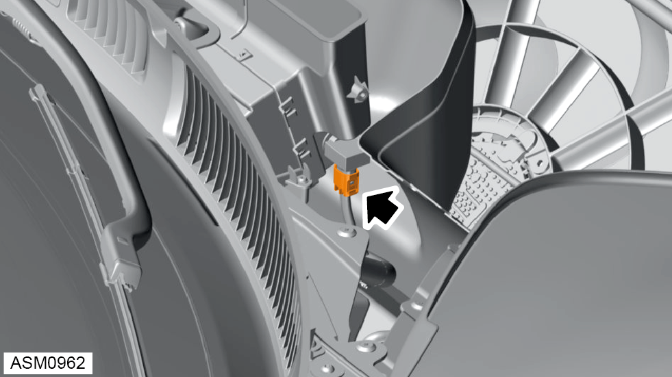
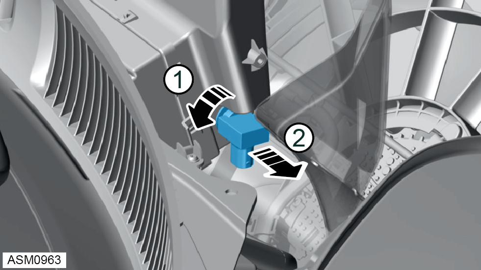

Air Quality Sensor - V6
Print
Operation Code: 17.06.39-02
Removal
- Remove radiator outlet duct left side. Refer to procedure.
- Remove radiator outlet duct right side.
NOTE: Procedure is the same for left side component.
- Remove scrivets (x3) securing HVAC air inlet to vehicle.
- Remove M5x12 bolts (x2) and washers (x2) securing HVAC air inlet to vehicle.
- Remove HVAC air inlet.
-
If fitted, remove water shield from HVAC unit. Refer to TSB-131-24007.

- Disconnect harness connector from air quality sensor.

- Remove air quality sensor.
NOTE: Turn sensor 90 degrees counter clockwise to release.
Installation
- Installation is the reverse of removal procedure except for the following:
- After installation perform a diagnostic read and clear error memory using Lotus Insight tool.